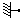
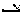
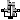
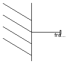
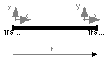
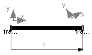
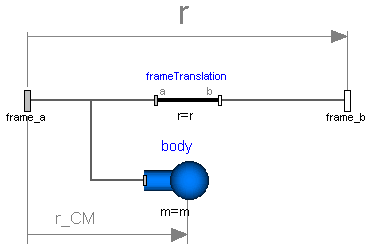
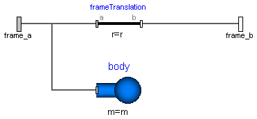
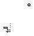
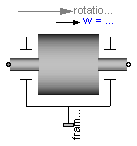

Package Parts contains rigid components of a multi-body system. These components may be used to build up more complicated structures. For example, a part may be built up of a "Body" and of several "FixedTranslation" components.
| Model | Description |
|---|---|
| Fixed | Frame fixed in world frame at a given position.
It is visualized with a shape, see shapeType below
(the frames on the two
sides do not belong to the component):
|
| FixedTranslation | Fixed translation of frame_b with respect to frame_a.
It is visualized with a shape, see shapeType below
(the frames on the two sides do not belong to the component):
|
| FixedRotation | Fixed translation and fixed rotation of frame_b with respect to frame_a
It is visualized with a shape, see shapeType below
(the frames on the two sides do not belong to the component):
|
| Body | Rigid body with mass, inertia tensor and one frame connector.
It is visualized with a cylinder and a sphere at the
center of mass:
|
| BodyShape | Rigid body with mass, inertia tensor, different shapes
(see shapeType below)
for animation, and two frame connectors:
|
| Fixed BodyBox | Rigid body with box shape (mass and animation properties are computed
from box data and from density):
|
| BodyCylinder | Rigid body with cylinder shape (mass and animation properties
are computed from cylinder data and from density):
|
| PointMass | Rigid body where inertia tensor and rotation is neglected:
|
| Mounting1D | Propagate 1-dim. support torque to 3-dim. system |
| Rotor1D | 1D inertia attachable on 3-dim. bodies (without neglecting dynamic effects)
|
| BevelGear1D | 1D gearbox with arbitrary shaft directions (3D bearing frame) |
Components Fixed, FixedTranslation, FixedRotation
and BodyShape are visualized according to parameter
shapeType, that may have the following values (e.g., shapeType = "box"):

All the details of the visualization shape parameters are given in Visualizers.FixedShape
Colors in all animation parts are defined via parameter color. This is an Integer vector with 3 elements, {r, g, b}, and specifies the color of the shape. {r,g,b} are the "red", "green" and "blue" color parts, given in the ranges 0 .. 255, respectively. The predefined type MultiBody.Types.Color contains a menu definition of the colors used in the MultiBody library (this will be replaced by a color editor).
| Name | Description |
|---|---|
|  Fixed | Frame fixed in the world frame at a given position |
| Fixed translation of frame_b with respect to frame_a | |
|  FixedRotation | Fixed translation followed by a fixed rotation of frame_b with respect to frame_a |
| Body | Rigid body with mass, inertia tensor and one frame connector (12 potential states) |
| Rigid body with mass, inertia tensor, different shapes for animation, and two frame connectors (12 potential states) | |
| BodyBox | Rigid body with box shape. Mass and animation properties are computed from box data and density (12 potential states) |
| Rigid body with cylinder shape. Mass and animation properties are computed from cylinder data and density (12 potential states) | |
| PointMass | Rigid body where body rotation and inertia tensor is neglected (6 potential states) |
| Propagate 1-dim. support torque to 3-dim. system (provided world.driveTrainMechanics3D=true; default=false) | |
| Rotor1D | 1D inertia attachable on 3-dim. bodies (3D dynamic effects are taken into account if world.driveTrainMechanics3D=true; default=false) |
|  BevelGear1D | 1D gearbox with arbitrary shaft directions and 3-dim. bearing frame (3D dynamic effects are taken into account provided world.driveTrainMechanics3D=true; default=false) |

Element consisting of a frame (frame_b) that is fixed in the world frame at a given position defined by parameter vector r (vector from origin of world frame to frame_b, resolved in the world frame).
By default, this component is visualized by a cylinder connecting the world frame and frame_b of this components, as shown in the figure below. Note, that the visualized world frame on the left side and Fixed.frame_b on the right side are not part of the component animation and that the animation may be switched off via parameter animation = false.
| Type | Name | Default | Description |
|---|---|---|---|
| animation | true | = true, if animation shall be enabled | |
| r[3] | {0,0,0} | Position vector from world frame to frame_b, resolved in world frame [m] | |
| Animation | |||
| if animation = true | |||
| shapeType | "cylinder" | Type of shape | |
| r_shape[3] | {0,0,0} | Vector from world frame to shape origin, resolved in world frame [m] | |
| lengthDirection[3] | r - r_shape | Vector in length direction of shape, resolved in world frame [m] | |
| widthDirection[3] | {0,1,0} | Vector in width direction of shape, resolved in world frame [m] | |
| length | Frames.length(r - r_shape) | Length of shape [m] | |
| width | length/world.defaultWidthFra... | Width of shape [m] | |
| height | width | Height of shape [m] | |
| extra | 0.0 | Additional parameter for cone, pipe etc. (see docu of Visualizers.Advanced.Shape) | |
| color[3] | Modelica.Mechanics.MultiBody... | Color of shape | |
| specularCoefficient | world.defaultSpecularCoeffic... | Reflection of ambient light (= 0: light is completely absorbed) | |
| Type | Name | Description |
|---|---|---|
| frame_b | Coordinate system fixed in the world frame |
model Fixed "Frame fixed in the world frame at a given position"
import SI = Modelica.SIunits;
import Modelica.Mechanics.MultiBody.Types;
Interfaces.Frame_b frame_b "Coordinate system fixed in the world frame";
parameter Boolean animation=true "= true, if animation shall be enabled";
parameter SI.Position r[3]={0,0,0}
"Position vector from world frame to frame_b, resolved in world frame";
parameter Types.ShapeType shapeType="cylinder" " Type of shape";
parameter SI.Position r_shape[3]={0,0,0}
" Vector from world frame to shape origin, resolved in world frame";
parameter SI.Position lengthDirection[3]=r - r_shape
" Vector in length direction of shape, resolved in world frame";
parameter SI.Position widthDirection[3]={0,1,0}
" Vector in width direction of shape, resolved in world frame";
parameter SI.Length length=Frames.length(r - r_shape) " Length of shape";
parameter SI.Distance width=length/world.defaultWidthFraction
" Width of shape";
parameter SI.Distance height=width " Height of shape";
parameter Types.ShapeExtra extra=0.0
" Additional parameter for cone, pipe etc. (see docu of Visualizers.Advanced.Shape)";
input Types.Color color=Modelica.Mechanics.MultiBody.Types.Defaults.RodColor
" Color of shape";
input Types.SpecularCoefficient specularCoefficient = world.defaultSpecularCoefficient
"Reflection of ambient light (= 0: light is completely absorbed)";
protected
outer Modelica.Mechanics.MultiBody.World world;
Visualizers.Advanced.Shape shape(
shapeType=shapeType,
color=color,
specularCoefficient=specularCoefficient,
length=length,
width=width,
height=height,
lengthDirection=lengthDirection,
widthDirection=widthDirection,
extra=extra,
r_shape=r_shape,
r=zeros(3),
R=Frames.nullRotation()) if world.enableAnimation and animation;
equation
defineRoot(frame_b.R);
frame_b.r_0 = r;
frame_b.R = Frames.nullRotation();
end Fixed;

Component for a fixed translation of frame_b with respect to frame_a, i.e., the relationship between connectors frame_a and frame_b remains constant and frame_a is always parallel to frame_b.
By default, this component is visualized by a cylinder connecting frame_a and frame_b, as shown in the figure below. Note, that the two visualized frames are not part of the component animation and that the animation may be switched off via parameter animation = false.
| Type | Name | Default | Description |
|---|---|---|---|
| animation | true | = true, if animation shall be enabled | |
| r[3] | {0,0,0} | Vector from frame_a to frame_b resolved in frame_a [m] | |
| Animation | |||
| if animation = true | |||
| shapeType | "cylinder" | Type of shape | |
| r_shape[3] | {0,0,0} | Vector from frame_a to shape origin, resolved in frame_a [m] | |
| lengthDirection[3] | r - r_shape | Vector in length direction of shape, resolved in frame_a | |
| widthDirection[3] | {0,1,0} | Vector in width direction of shape, resolved in frame_a | |
| length | Frames.length(r - r_shape) | Length of shape [m] | |
| width | length/world.defaultWidthFra... | Width of shape [m] | |
| height | width | Height of shape. [m] | |
| extra | 0.0 | Additional parameter depending on shapeType (see docu of Visualizers.Advanced.Shape). | |
| color[3] | Modelica.Mechanics.MultiBody... | Color of shape | |
| specularCoefficient | world.defaultSpecularCoeffic... | Reflection of ambient light (= 0: light is completely absorbed) | |
| Type | Name | Description |
|---|---|---|
| frame_a | Coordinate system fixed to the component with one cut-force and cut-torque | |
| frame_b | Coordinate system fixed to the component with one cut-force and cut-torque |
model FixedTranslation
"Fixed translation of frame_b with respect to frame_a"
import SI = Modelica.SIunits;
import Modelica.Mechanics.MultiBody.Types;
Interfaces.Frame_a frame_a
"Coordinate system fixed to the component with one cut-force and cut-torque";
Interfaces.Frame_b frame_b
"Coordinate system fixed to the component with one cut-force and cut-torque";
parameter Boolean animation=true "= true, if animation shall be enabled";
parameter SI.Position r[3]={0,0,0}
"Vector from frame_a to frame_b resolved in frame_a";
parameter Types.ShapeType shapeType="cylinder" " Type of shape";
parameter SI.Position r_shape[3]={0,0,0}
" Vector from frame_a to shape origin, resolved in frame_a";
parameter Types.Axis lengthDirection=r - r_shape
" Vector in length direction of shape, resolved in frame_a";
parameter Types.Axis widthDirection={0,1,0}
" Vector in width direction of shape, resolved in frame_a";
parameter SI.Length length=Frames.length(r - r_shape) " Length of shape";
parameter SI.Distance width=length/world.defaultWidthFraction
" Width of shape";
parameter SI.Distance height=width " Height of shape.";
parameter Types.ShapeExtra extra=0.0
" Additional parameter depending on shapeType (see docu of Visualizers.Advanced.Shape).";
input Types.Color color=Modelica.Mechanics.MultiBody.Types.Defaults.RodColor
" Color of shape";
input Types.SpecularCoefficient specularCoefficient = world.defaultSpecularCoefficient
"Reflection of ambient light (= 0: light is completely absorbed)";
protected
outer Modelica.Mechanics.MultiBody.World world;
Visualizers.Advanced.Shape shape(
shapeType=shapeType,
color=color,
specularCoefficient=specularCoefficient,
r_shape=r_shape,
lengthDirection=lengthDirection,
widthDirection=widthDirection,
length=length,
width=width,
height=height,
extra=extra,
r=frame_a.r_0,
R=frame_a.R) if world.enableAnimation and animation;
equation
defineBranch(frame_a.R, frame_b.R);
assert(cardinality(frame_a) > 0 or cardinality(frame_b) > 0,
"Neither connector frame_a nor frame_b of FixedTranslation object is connected");
frame_b.r_0 = frame_a.r_0 + Frames.resolve1(frame_a.R, r);
frame_b.R = frame_a.R;
/* Force and torque balance */
zeros(3) = frame_a.f + frame_b.f;
zeros(3) = frame_a.t + frame_b.t + cross(r, frame_b.f);
end FixedTranslation;
 Modelica.Mechanics.MultiBody.Parts.FixedRotation
Modelica.Mechanics.MultiBody.Parts.FixedRotation
Component for a fixed translation and fixed rotation of frame_b with respect to frame_a, i.e., the relationship between connectors frame_a and frame_b remains constant. There are several possibilities to define the orientation of frame_b with respect to frame_a:
By default, this component is visualized by a cylinder connecting frame_a and frame_b, as shown in the figure below. In this figure frame_b is rotated along the z-axis of frame_a with 60 degree. Note, that the two visualized frames are not part of the component animation and that the animation may be switched off via parameter animation = false.
| Type | Name | Default | Description |
|---|---|---|---|
| animation | true | = true, if animation shall be enabled | |
| r[3] | {0,0,0} | Vector from frame_a to frame_b resolved in frame_a [m] | |
| rotationType | Modelica.Mechanics.MultiBody... | Type of rotation description | |
| if rotationType = RotationAxis | |||
| n[3] | {1,0,0} | Axis of rotation in frame_a (= same as in frame_b) | |
| angle | 0 | Angle to rotate frame_a around axis n into frame_b [deg] | |
| if rotationType = TwoAxesVectors | |||
| n_x[3] | {1,0,0} | Vector along x-axis of frame_b resolved in frame_a | |
| n_y[3] | {0,1,0} | Vector along y-axis of frame_b resolved in frame_a | |
| if rotationType = PlanarRotationSequence | |||
| sequence[3] | {1,2,3} | Sequence of rotations | |
| angles[3] | {0,0,0} | Rotation angles around the axes defined in 'sequence' [deg] | |
| Animation | |||
| if animation = true | |||
| shapeType | "cylinder" | Type of shape | |
| r_shape[3] | {0,0,0} | Vector from frame_a to shape origin, resolved in frame_a [m] | |
| lengthDirection[3] | r - r_shape | Vector in length direction of shape, resolved in frame_a | |
| widthDirection[3] | {0,1,0} | Vector in width direction of shape, resolved in frame_a | |
| length | Frames.length(r - r_shape) | Length of shape [m] | |
| width | length/world.defaultWidthFra... | Width of shape [m] | |
| height | width | Height of shape. [m] | |
| extra | 0.0 | Additional parameter depending on shapeType (see docu of Visualizers.Advanced.Shape). | |
| color[3] | Modelica.Mechanics.MultiBody... | Color of shape | |
| specularCoefficient | world.defaultSpecularCoeffic... | Reflection of ambient light (= 0: light is completely absorbed) | |
| Type | Name | Description |
|---|---|---|
| frame_a | Coordinate system fixed to the component with one cut-force and cut-torque | |
| frame_b | Coordinate system fixed to the component with one cut-force and cut-torque |
model FixedRotation
"Fixed translation followed by a fixed rotation of frame_b with respect to frame_a"
import Modelica.Mechanics.MultiBody.Frames;
import Modelica.Mechanics.MultiBody.Types;
import SI = Modelica.SIunits;
import Cv = Modelica.SIunits.Conversions;
Interfaces.Frame_a frame_a
"Coordinate system fixed to the component with one cut-force and cut-torque";
Interfaces.Frame_b frame_b
"Coordinate system fixed to the component with one cut-force and cut-torque";
parameter Boolean animation=true "= true, if animation shall be enabled";
parameter SI.Position r[3]={0,0,0}
"Vector from frame_a to frame_b resolved in frame_a";
parameter Types.RotationTypes.Temp rotationType=Modelica.Mechanics.MultiBody.Types.RotationTypes.RotationAxis
"Type of rotation description";
parameter Types.Axis n={1,0,0}
" Axis of rotation in frame_a (= same as in frame_b)";
parameter Cv.NonSIunits.Angle_deg angle=0
" Angle to rotate frame_a around axis n into frame_b";
parameter Types.Axis n_x={1,0,0}
" Vector along x-axis of frame_b resolved in frame_a";
parameter Types.Axis n_y={0,1,0}
" Vector along y-axis of frame_b resolved in frame_a";
parameter Types.RotationSequence sequence(
min={1,1,1},
max={3,3,3}) = {1,2,3} " Sequence of rotations";
parameter Cv.NonSIunits.Angle_deg angles[3]={0,0,0}
" Rotation angles around the axes defined in 'sequence'";
parameter Types.ShapeType shapeType="cylinder" " Type of shape";
parameter SI.Position r_shape[3]={0,0,0}
" Vector from frame_a to shape origin, resolved in frame_a";
parameter Types.Axis lengthDirection=r - r_shape
" Vector in length direction of shape, resolved in frame_a";
parameter Types.Axis widthDirection={0,1,0}
" Vector in width direction of shape, resolved in frame_a";
parameter SI.Length length=Frames.length(r - r_shape) " Length of shape";
parameter SI.Distance width=length/world.defaultWidthFraction
" Width of shape";
parameter SI.Distance height=width " Height of shape.";
parameter Types.ShapeExtra extra=0.0
" Additional parameter depending on shapeType (see docu of Visualizers.Advanced.Shape).";
input Types.Color color=Modelica.Mechanics.MultiBody.Types.Defaults.RodColor
" Color of shape";
input Types.SpecularCoefficient specularCoefficient = world.defaultSpecularCoefficient
"Reflection of ambient light (= 0: light is completely absorbed)";
final parameter Frames.Orientation R_rel=if rotationType == 1 then
Frames.planarRotation(Frames.normalize(n), Cv.from_deg(angle), 0) else
if rotationType == 2 then Frames.from_nxy(n_x, n_y) else
Frames.axesRotations(sequence, Cv.from_deg(angles), zeros(3))
"Fixed rotation object from frame_a to frame_b";
protected
outer Modelica.Mechanics.MultiBody.World world;
/*
parameter Frames.Orientation R_rel_inv=
Frames.inverseRotation(R_rel)
*/
parameter Frames.Orientation R_rel_inv=Frames.from_T(transpose(R_rel.T),
zeros(3)) "Inverse of R_rel (rotate from frame_b to frame_a)";
Modelica.Mechanics.MultiBody.Visualizers.Advanced.Shape shape(
shapeType=shapeType,
color=color,
specularCoefficient=specularCoefficient,
r_shape=r_shape,
lengthDirection=lengthDirection,
widthDirection=widthDirection,
length=length,
width=width,
height=height,
extra=extra,
r=frame_a.r_0,
R=frame_a.R) if world.enableAnimation and animation;
equation
defineBranch(frame_a.R, frame_b.R);
assert(cardinality(frame_a) > 0 or cardinality(frame_b) > 0,
"Neither connector frame_a nor frame_b of FixedRotation object is connected");
/* Relationships between quantities of frame_a and frame_b */
frame_b.r_0 = frame_a.r_0 + Frames.resolve1(frame_a.R, r);
if rooted(frame_a.R) then
frame_b.R = Frames.absoluteRotation(frame_a.R, R_rel);
zeros(3) = frame_a.f + Frames.resolve1(R_rel, frame_b.f);
zeros(3) = frame_a.t + Frames.resolve1(R_rel, frame_b.t) - cross(r,
frame_a.f);
else
frame_a.R = Frames.absoluteRotation(frame_b.R, R_rel_inv);
zeros(3) = frame_b.f + Frames.resolve1(R_rel_inv, frame_a.f);
zeros(3) = frame_b.t + Frames.resolve1(R_rel_inv, frame_a.t) + cross(r,
frame_b.f);
end if;
end FixedRotation;

Rigid body with mass and inertia tensor. All parameter vectors have to be resolved in frame_a. The inertia tensor has to be defined with respect to a coordinate system that is parallel to frame_a with the origin at the center of mass of the body.
By default, this component is visualized by a cylinder located between frame_a and the center of mass and by a sphere that has its center at the center of mass. If the cylinder length is smaller as the radius of the sphere, e.g., since frame_a is located at the center of mass, the cylinder is not displayed. Note, that the animation may be switched off via parameter animation = false.
States of Body Components
Every body has potential states. If possible a tool will select the states of joints and not the states of bodies because this is usually the most efficient choice. In this case the position, orientation, velocity and angular velocity of frame_a of the body will be computed by the component that is connected to frame_a. However, if a body is moving freely in space, variables of the body have to be used as states. The potential states of the body are:
The quaternions have the slight disadvantage that there is a non-linear constraint equation between the 4 quaternions. Therefore, at least one non-linear equation has to be solved during simulation. A tool might, however, analytically solve this simple constraint equation. Using the 3 angles as states has the disadvantage that there is a singular configuration in which a division by zero will occur. If it is possible to determine in advance for an application class that this singular configuration is outside of the operating region, the 3 angles might be used as potential states by setting useQuaternions = false.
In text books about 3-dimensional mechanics often 3 angles and the angular velocity are used as states. This is not the case here, since 3 angles and their derivatives are used as potential states (if useQuaternions = false). The reason is that for real-time simulation the discretization formula of the integrator might be "inlined" and solved together with the body equations. By appropriate symbolic transformation the performance is drastically increased if angles and their derivatives are used as states, instead of angles and the angular velocity.
Whether or not variables of the body are used as states is usually automatically selected by the Modelica translator. If parameter enforceStates is set to true in the "Advanced" menu, then body variables are forced to be used as states according to the setting of parameters "useQuaternions" and "sequence_angleStates".
| Type | Name | Default | Description |
|---|---|---|---|
| animation | true | = true, if animation shall be enabled (show cylinder and sphere) | |
| r_CM[3] | {0,0,0} | Vector from frame_a to center of mass, resolved in frame_a [m] | |
| m | 1 | Mass of rigid body [kg] | |
| Inertia tensor (resolved in center of mass, parallel to frame_a) | |||
| I_11 | 0.001 | (1,1) element of inertia tensor [kg.m2] | |
| I_22 | 0.001 | (2,2) element of inertia tensor [kg.m2] | |
| I_33 | 0.001 | (3,3) element of inertia tensor [kg.m2] | |
| I_21 | 0 | (2,1) element of inertia tensor [kg.m2] | |
| I_31 | 0 | (3,1) element of inertia tensor [kg.m2] | |
| I_32 | 0 | (3,2) element of inertia tensor [kg.m2] | |
| Initialization | |||
| initType | Modelica.Mechanics.MultiBody... | Type of initialization (defines usage of start values below) | |
| r_0_start[3] | {0,0,0} | Initial values of frame_a.r_0 (vector from origin of world frame to origin of frame_a resolved in world frame) [m] | |
| sequence_start[3] | {1,2,3} | Sequence of rotations to rotate world frame into frame_a at initial time | |
| angles_start[3] | {0,0,0} | Initial values of angles to rotate world frame around 'sequence_start' axes into frame_a [deg] | |
| v_0_start[3] | {0,0,0} | Initial values of velocity v_0 = der(frame_a.r_0) [m/s] | |
| w_0_start[3] | {0,0,0} | Initial values of angular velocity of frame_a resolved in world frame [deg/s] | |
| a_0_start[3] | {0,0,0} | Initial values of acceleration a_0 = der(v_0) [m/s2] | |
| z_0_start[3] | {0,0,0} | Initial values of angular acceleration z_0 = der(w_0) [deg/s2] | |
| Animation | |||
| if animation = true | |||
| sphereDiameter | world.defaultBodyDiameter | Diameter of sphere [m] | |
| sphereColor[3] | Modelica.Mechanics.MultiBody... | Color of sphere | |
| cylinderDiameter | sphereDiameter/Types.Default... | Diameter of cylinder [m] | |
| cylinderColor[3] | sphereColor | Color of cylinder | |
| specularCoefficient | world.defaultSpecularCoeffic... | Reflection of ambient light (= 0: light is completely absorbed) | |
| Advanced | |||
| enforceStates | false | = true, if absolute variables of body object shall be used as states (StateSelect.always) | |
| useQuaternions | true | = true, if quaternions shall be used as potential states otherwise use 3 angles as potential states | |
| sequence_angleStates[3] | {1,2,3} | Sequence of rotations to rotate world frame into frame_a around the 3 angles used as potential states | |
| Type | Name | Description |
|---|---|---|
| frame_a | Coordinate system fixed at body |
model Body
"Rigid body with mass, inertia tensor and one frame connector (12 potential states)"
import SI = Modelica.SIunits;
import Cv = Modelica.SIunits.Conversions;
import C = Modelica.Constants;
import Modelica.Math.*;
import Modelica.Mechanics.MultiBody.Types;
Interfaces.Frame_a frame_a(r_0(start=r_0_start, stateSelect=if
enforceStates then StateSelect.always else StateSelect.avoid))
"Coordinate system fixed at body";
parameter Boolean animation=true
"= true, if animation shall be enabled (show cylinder and sphere)";
parameter SI.Position r_CM[3]={0,0,0}
"Vector from frame_a to center of mass, resolved in frame_a";
parameter SI.Mass m(min=0) = 1 "Mass of rigid body";
parameter SI.Inertia I_11(min=0) = 0.001 " (1,1) element of inertia tensor";
parameter SI.Inertia I_22(min=0) = 0.001 " (2,2) element of inertia tensor";
parameter SI.Inertia I_33(min=0) = 0.001 " (3,3) element of inertia tensor";
parameter SI.Inertia I_21(min=-C.inf)=0 " (2,1) element of inertia tensor";
parameter SI.Inertia I_31(min=-C.inf)=0 " (3,1) element of inertia tensor";
parameter SI.Inertia I_32(min=-C.inf)=0 " (3,2) element of inertia tensor";
parameter Types.Init.Temp initType=Modelica.Mechanics.MultiBody.Types.Init.Free
" Type of initialization (defines usage of start values below)";
parameter SI.Position r_0_start[3]={0,0,0}
" Initial values of frame_a.r_0 (vector from origin of world frame to origin of frame_a resolved in world frame)";
parameter Types.RotationSequence sequence_start={1,2,3}
" Sequence of rotations to rotate world frame into frame_a at initial time";
parameter Cv.NonSIunits.Angle_deg angles_start[3]={0,0,0}
" Initial values of angles to rotate world frame around 'sequence_start' axes into frame_a";
parameter SI.Velocity v_0_start[3]={0,0,0}
" Initial values of velocity v_0 = der(frame_a.r_0)";
parameter Types.AngularVelocity_degs w_0_start[3]={0,0,0}
" Initial values of angular velocity of frame_a resolved in world frame";
parameter SI.Acceleration a_0_start[3]={0,0,0}
" Initial values of acceleration a_0 = der(v_0)";
parameter Types.AngularAcceleration_degs2 z_0_start[3]={0,0,0}
" Initial values of angular acceleration z_0 = der(w_0)";
parameter SI.Diameter sphereDiameter=world.defaultBodyDiameter
"Diameter of sphere";
input Types.Color sphereColor=Modelica.Mechanics.MultiBody.Types.Defaults.BodyColor
"Color of sphere";
parameter SI.Diameter cylinderDiameter=sphereDiameter/Types.Defaults.
BodyCylinderDiameterFraction "Diameter of cylinder";
input Types.Color cylinderColor=sphereColor "Color of cylinder";
input Types.SpecularCoefficient specularCoefficient = world.defaultSpecularCoefficient
"Reflection of ambient light (= 0: light is completely absorbed)";
parameter Boolean enforceStates=false
" = true, if absolute variables of body object shall be used as states (StateSelect.always)";
parameter Boolean useQuaternions=true
" = true, if quaternions shall be used as potential states otherwise use 3 angles as potential states";
parameter Types.RotationSequence sequence_angleStates={1,2,3}
" Sequence of rotations to rotate world frame into frame_a around the 3 angles used as potential states";
final parameter SI.Inertia I[3, 3]=[I_11, I_21, I_31; I_21, I_22, I_32;
I_31, I_32, I_33] "inertia tensor";
final parameter Frames.Orientation R_start=Modelica.Mechanics.MultiBody.Frames.axesRotations(
sequence_start, Cv.from_deg(angles_start), zeros(3))
"Orientation object from world frame to frame_a at initial time";
final parameter SI.AngularVelocity w_a_start[3]=Modelica.Mechanics.MultiBody.Frames.resolve2(
R_start, w_0_start*Modelica.Constants.D2R);
final parameter SI.AngularAcceleration z_a_start[3]=
Modelica.Mechanics.MultiBody.Frames.resolve2(R_start, z_0_start*Modelica.Constants.D2R);
SI.Velocity v_0[3](start=v_0_start, stateSelect=if enforceStates then
StateSelect.always else StateSelect.avoid)
"Absolute velocity of frame_a, resolved in world frame";
SI.Acceleration a_0[3]
"Absolute acceleration of frame_a resolved in world frame";
SI.AngularVelocity w_a[3](start=w_a_start, stateSelect=if enforceStates then
(if useQuaternions then StateSelect.always else StateSelect.never) else StateSelect.avoid)
"Absolute angular velocity of frame_a resolved in frame_a";
SI.AngularAcceleration z_a[3]
"Absolute angular acceleration of frame_a resolved in frame_a";
SI.Acceleration g_0[3] "Gravity acceleration resolved in world frame";
protected
outer Modelica.Mechanics.MultiBody.World world;
// Declarations for quaternions (dummies, if quaternions are not used)
parameter Frames.Quaternions.Orientation Q_start=Modelica.Mechanics.MultiBody.Frames.to_Q(
R_start)
"Quaternion orientation object from world frame to frame_a at initial time";
Frames.Quaternions.Orientation Q(start=Q_start, stateSelect=if
enforceStates then (if useQuaternions then StateSelect.prefer else
StateSelect.never) else StateSelect.avoid)
"Quaternion orientation object from world frame to frame_a (dummy value, if quaternions are not used as states)";
// Declaration for 3 angles
parameter SI.Angle phi_start[3]=if sequence_start[1] ==
sequence_angleStates[1] and sequence_start[2] == sequence_angleStates[2]
and sequence_start[3] == sequence_angleStates[3] then Cv.from_deg(
angles_start) else Frames.axesRotationsAngles(R_start,
sequence_angleStates) "Potential angle states at initial time";
SI.Angle phi[3](start=phi_start, stateSelect=if enforceStates then (if
useQuaternions then StateSelect.never else StateSelect.always) else
StateSelect.avoid)
"Dummy or 3 angles to rotate world frame into frame_a of body";
SI.AngularVelocity phi_d[3](stateSelect=if enforceStates then (if
useQuaternions then StateSelect.never else StateSelect.always) else
StateSelect.avoid) "= der(phi)";
SI.AngularAcceleration phi_dd[3] "= der(phi_d)";
// Declarations for animation
Visualizers.Advanced.Shape cylinder(
shapeType="cylinder",
color=cylinderColor,
specularCoefficient=specularCoefficient,
length=if Modelica.Mechanics.MultiBody.Frames.length(r_CM) > sphereDiameter/2 then
Modelica.Mechanics.MultiBody.Frames.length(r_CM) - (if cylinderDiameter > 1.1*
sphereDiameter then sphereDiameter/2 else 0) else 0,
width=cylinderDiameter,
height=cylinderDiameter,
lengthDirection=r_CM,
widthDirection={0,1,0},
r=frame_a.r_0,
R=frame_a.R) if world.enableAnimation and animation;
Visualizers.Advanced.Shape sphere(
shapeType="sphere",
color=sphereColor,
specularCoefficient=specularCoefficient,
length=sphereDiameter,
width=sphereDiameter,
height=sphereDiameter,
lengthDirection={1,0,0},
widthDirection={0,1,0},
r_shape=r_CM - {1,0,0}*sphereDiameter/2,
r=frame_a.r_0,
R=frame_a.R) if world.enableAnimation and animation and sphereDiameter > 0;
initial equation
if initType == Types.Init.Position or initType == Types.Init.
PositionVelocity or initType == Types.Init.PositionVelocityAcceleration then
// Initialize positional variables
frame_a.r_0 = r_0_start;
if not isRoot(frame_a.R) then
// frame_a.R is computed somewhere else
zeros(3) = Frames.Orientation.equalityConstraint(frame_a.R, R_start);
elseif useQuaternions then
// frame_a.R is computed from quaternions Q
zeros(3) = Frames.Quaternions.Orientation.equalityConstraint(Q, Q_start);
else
// frame_a.R is computed from the 3 angles 'phi'
phi = phi_start;
end if;
end if;
if initType == Types.Init.PositionVelocity or initType == Types.Init.
PositionVelocityAcceleration or initType == Types.Init.Velocity or
initType == Types.Init.VelocityAcceleration then
// Initialize velocity variables
v_0 = v_0_start;
w_a = w_a_start;
end if;
if initType == Types.Init.VelocityAcceleration or initType == Types.Init.
PositionVelocityAcceleration then
// Initialize acceleration variables
a_0 = a_0_start;
z_a = z_a_start;
end if;
if initType == Types.Init.SteadyState then
v_0 = zeros(3);
a_0 = zeros(3);
w_a = zeros(3);
z_a = zeros(3);
end if;
equation
if enforceStates then
defineRoot(frame_a.R);
else
definePotentialRoot(frame_a.R);
end if;
if not isRoot(frame_a.R) then
// Body does not have states
// Dummies
Q = {0,0,0,1};
phi = zeros(3);
phi_d = zeros(3);
phi_dd = zeros(3);
elseif useQuaternions then
// Use Quaternions as states (with dynamic state selection)
frame_a.R = Frames.from_Q(Q, Frames.Quaternions.angularVelocity2(Q, der(Q)));
{0} = Frames.Quaternions.orientationConstraint(Q);
// Dummies
phi = zeros(3);
phi_d = zeros(3);
phi_dd = zeros(3);
else
// Use Cardan angles as states
phi_d = der(phi);
phi_dd = der(phi_d);
frame_a.R = Frames.axesRotations(sequence_angleStates, phi, phi_d);
// Dummies
Q = {0,0,0,1};
end if;
// gravity acceleration at center of mass resolved in world frame
g_0 = world.gravityAcceleration(frame_a.r_0 + Frames.resolve1(frame_a.R,
r_CM));
// translational kinematic differential equations
v_0 = der(frame_a.r_0);
a_0 = der(v_0);
// rotational kinematic differential equations
w_a = Frames.angularVelocity2(frame_a.R);
z_a = der(w_a);
/* Newton/Euler equations with respect to center of mass
a_CM = a_a + cross(z_a, r_CM) + cross(w_a, cross(w_a, r_CM));
f_CM = m*(a_CM - g_a);
t_CM = I*z_a + cross(w_a, I*w_a);
frame_a.f = f_CM
frame_a.t = t_CM + cross(r_CM, f_CM);
Inserting the first three equations in the last two results in:
*/
frame_a.f = m*(Frames.resolve2(frame_a.R, a_0 - g_0) + cross(z_a, r_CM) +
cross(w_a, cross(w_a, r_CM)));
frame_a.t = I*z_a + cross(w_a, I*w_a) + cross(r_CM, frame_a.f);
end Body;

Rigid body with mass and inertia tensor and two frame connectors. All parameter vectors have to be resolved in frame_a. The inertia tensor has to be defined with respect to a coordinate system that is parallel to frame_a with the origin at the center of mass of the body. The coordinate system frame_b is always parallel to frame_a.
By default, this component is visualized by any shape that can be defined with Modelica.Mechanics.MultiBody.Visualizers.FixedShape. This shape is placed between frame_a and frame_b (default: length(shape) = Frames.length(r)). Additionally a sphere may be visualized that has its center at the center of mass. Note, that the animation may be switched off via parameter animation = false.
The following shapes can be defined via parameter shapeType, e.g., shapeType="cone":
A BodyShape component has potential states. For details of these states and of the "Advanced" menu parameters, see model MultiBody.Parts.Body.
| Type | Name | Default | Description |
|---|---|---|---|
| animation | true | = true, if animation shall be enabled (show shape between frame_a and frame_b and optionally a sphere at the center of mass) | |
| animateSphere | true | = true, if mass shall be animated as sphere provided animation=true | |
| r[3] | {0,0,0} | Vector from frame_a to frame_b resolved in frame_a [m] | |
| r_CM[3] | {0,0,0} | Vector from frame_a to center of mass, resolved in frame_a [m] | |
| m | 1 | Mass of rigid body [kg] | |
| Inertia tensor (resolved in center of mass, parallel to frame_a) | |||
| I_11 | 0.001 | (1,1) element of inertia tensor [kg.m2] | |
| I_22 | 0.001 | (2,2) element of inertia tensor [kg.m2] | |
| I_33 | 0.001 | (3,3) element of inertia tensor [kg.m2] | |
| I_21 | 0 | (2,1) element of inertia tensor [kg.m2] | |
| I_31 | 0 | (3,1) element of inertia tensor [kg.m2] | |
| I_32 | 0 | (3,2) element of inertia tensor [kg.m2] | |
| Initialization | |||
| initType | Modelica.Mechanics.MultiBody... | Type of initialization (defines usage of start values below) | |
| r_0_start[3] | {0,0,0} | Initial values of frame_a.r_0 (vector from origin of world frame to origin of frame_a resolved in world frame) [m] | |
| sequence_start[3] | {1,2,3} | Sequence of rotations to rotate world frame into frame_a at initial time | |
| angles_start[3] | {0,0,0} | Initial values of angles to rotate world frame around 'sequence_start' axes into frame_a [deg] | |
| v_0_start[3] | {0,0,0} | Initial values of velocity v_0 = der(frame_a.r_0) [m/s] | |
| w_0_start[3] | {0,0,0} | Initial values of angular velocity of frame_a resolved in world frame [deg/s] | |
| a_0_start[3] | {0,0,0} | Initial values of acceleration a_0 = der(v_0) [m/s2] | |
| z_0_start[3] | {0,0,0} | Initial values of angular acceleration z_0 = der(w_0) [deg/s2] | |
| Animation | |||
| if animation = true | |||
| shapeType | "cylinder" | Type of shape | |
| r_shape[3] | {0,0,0} | Vector from frame_a to shape origin, resolved in frame_a [m] | |
| lengthDirection[3] | r - r_shape | Vector in length direction of shape, resolved in frame_a | |
| widthDirection[3] | {0,1,0} | Vector in width direction of shape, resolved in frame_a | |
| length | Frames.length(r - r_shape) | Length of shape [m] | |
| width | length/world.defaultWidthFra... | Width of shape [m] | |
| height | width | Height of shape. [m] | |
| extra | 0.0 | Additional parameter depending on shapeType (see docu of Visualizers.Advanced.Shape). | |
| color[3] | Modelica.Mechanics.MultiBody... | Color of shape | |
| specularCoefficient | world.defaultSpecularCoeffic... | Reflection of ambient light (= 0: light is completely absorbed) | |
| if animation = true and animateSphere = true | |||
| sphereDiameter | 2*width | Diameter of sphere [m] | |
| sphereColor[3] | color | Color of sphere of mass | |
| Advanced | |||
| enforceStates | false | = true, if absolute variables of body object shall be used as states (StateSelect.always) | |
| useQuaternions | true | = true, if quaternions shall be used as potential states otherwise use 3 angles as potential states | |
| sequence_angleStates[3] | {1,2,3} | Sequence of rotations to rotate world frame into frame_a around the 3 angles used as potential states | |
| Type | Name | Description |
|---|---|---|
| frame_a | Coordinate system fixed to the component with one cut-force and cut-torque | |
| frame_b | Coordinate system fixed to the component with one cut-force and cut-torque |
model BodyShape
"Rigid body with mass, inertia tensor, different shapes for animation, and two frame connectors (12 potential states)"
import SI = Modelica.SIunits;
import NonSI = Modelica.SIunits.Conversions.NonSIunits;
import C = Modelica.Constants;
import Modelica.Mechanics.MultiBody.Types;
Interfaces.Frame_a frame_a
"Coordinate system fixed to the component with one cut-force and cut-torque";
Interfaces.Frame_b frame_b
"Coordinate system fixed to the component with one cut-force and cut-torque";
parameter Boolean animation=true
"= true, if animation shall be enabled (show shape between frame_a and frame_b and optionally a sphere at the center of mass)";
parameter Boolean animateSphere=true
"= true, if mass shall be animated as sphere provided animation=true";
parameter SI.Position r[3]={0,0,0}
"Vector from frame_a to frame_b resolved in frame_a";
parameter SI.Position r_CM[3]={0,0,0}
"Vector from frame_a to center of mass, resolved in frame_a";
parameter SI.Mass m(min=0) = 1 "Mass of rigid body";
parameter SI.Inertia I_11(min=0) = 0.001 " (1,1) element of inertia tensor";
parameter SI.Inertia I_22(min=0) = 0.001 " (2,2) element of inertia tensor";
parameter SI.Inertia I_33(min=0) = 0.001 " (3,3) element of inertia tensor";
parameter SI.Inertia I_21(min=-C.inf) = 0 " (2,1) element of inertia tensor";
parameter SI.Inertia I_31(min=-C.inf) = 0 " (3,1) element of inertia tensor";
parameter SI.Inertia I_32(min=-C.inf) = 0 " (3,2) element of inertia tensor";
parameter Types.Init.Temp initType=Modelica.Mechanics.MultiBody.Types.Init.Free
" Type of initialization (defines usage of start values below)";
parameter SI.Position r_0_start[3]={0,0,0}
" Initial values of frame_a.r_0 (vector from origin of world frame to origin of frame_a resolved in world frame)";
parameter Types.RotationSequence sequence_start={1,2,3}
" Sequence of rotations to rotate world frame into frame_a at initial time";
parameter NonSI.Angle_deg angles_start[3]={0,0,0}
" Initial values of angles to rotate world frame around 'sequence_start' axes into frame_a";
parameter SI.Velocity v_0_start[3]={0,0,0}
" Initial values of velocity v_0 = der(frame_a.r_0)";
parameter Types.AngularVelocity_degs w_0_start[3]={0,0,0}
" Initial values of angular velocity of frame_a resolved in world frame";
parameter SI.Acceleration a_0_start[3]={0,0,0}
" Initial values of acceleration a_0 = der(v_0)";
parameter Types.AngularAcceleration_degs2 z_0_start[3]={0,0,0}
" Initial values of angular acceleration z_0 = der(w_0)";
parameter Types.ShapeType shapeType="cylinder" " Type of shape";
parameter SI.Position r_shape[3]={0,0,0}
" Vector from frame_a to shape origin, resolved in frame_a";
parameter Types.Axis lengthDirection=r - r_shape
" Vector in length direction of shape, resolved in frame_a";
parameter Types.Axis widthDirection={0,1,0}
" Vector in width direction of shape, resolved in frame_a";
parameter SI.Length length=Frames.length(r - r_shape) " Length of shape";
parameter SI.Distance width=length/world.defaultWidthFraction
" Width of shape";
parameter SI.Distance height=width " Height of shape.";
parameter Types.ShapeExtra extra=0.0
" Additional parameter depending on shapeType (see docu of Visualizers.Advanced.Shape).";
input Types.Color color=Modelica.Mechanics.MultiBody.Types.Defaults.BodyColor
" Color of shape";
parameter SI.Diameter sphereDiameter=2*width " Diameter of sphere";
input Types.Color sphereColor=color " Color of sphere of mass";
input Types.SpecularCoefficient specularCoefficient = world.defaultSpecularCoefficient
"Reflection of ambient light (= 0: light is completely absorbed)";
parameter Boolean enforceStates=false
" = true, if absolute variables of body object shall be used as states (StateSelect.always)";
parameter Boolean useQuaternions=true
" = true, if quaternions shall be used as potential states otherwise use 3 angles as potential states";
parameter Types.RotationSequence sequence_angleStates={1,2,3}
" Sequence of rotations to rotate world frame into frame_a around the 3 angles used as potential states";
FixedTranslation frameTranslation(r=r, animation=false);
Body body(
r_CM=r_CM,
m=m,
I_11=I_11,
I_22=I_22,
I_33=I_33,
I_21=I_21,
I_31=I_31,
I_32=I_32,
animation=false,
initType=initType,
r_0_start=r_0_start,
sequence_start=sequence_start,
angles_start=angles_start,
v_0_start=v_0_start,
w_0_start=w_0_start,
a_0_start=a_0_start,
z_0_start=z_0_start,
useQuaternions=useQuaternions,
enforceStates=enforceStates,
sequence_angleStates=sequence_angleStates);
protected
outer Modelica.Mechanics.MultiBody.World world;
Visualizers.Advanced.Shape shape1(
shapeType=shapeType,
color=color,
specularCoefficient=specularCoefficient,
length=length,
width=width,
height=height,
lengthDirection=lengthDirection,
widthDirection=widthDirection,
r_shape=r_shape,
extra=extra,
r=frame_a.r_0,
R=frame_a.R) if world.enableAnimation and animation;
Visualizers.Advanced.Shape shape2(
shapeType="sphere",
color=sphereColor,
specularCoefficient=specularCoefficient,
length=sphereDiameter,
width=sphereDiameter,
height=sphereDiameter,
lengthDirection={1,0,0},
widthDirection={0,1,0},
r_shape=r_CM - {1,0,0}*sphereDiameter/2,
r=frame_a.r_0,
R=frame_a.R) if world.enableAnimation and animation and animateSphere;
equation
connect(frame_a, frameTranslation.frame_a);
connect(frame_b, frameTranslation.frame_b);
connect(frame_a, body.frame_a);
end BodyShape;

Rigid body with box shape. The mass properties of the body (mass, center of mass, inertia tensor) are computed from the box data. Optionally, the box may be hollow. The (outer) box shape is by default used in the animation. The hollow part is not shown in the animation. The two connector frames frame_a and frame_b are always parallel to each other. Example of component animation (note, that the animation may be switched off via parameter animation = false):
A BodyBox component has potential states. For details of these states and of the "Advanced" menu parameters, see model MultiBody.Parts.Body.
| Type | Name | Default | Description |
|---|---|---|---|
| animation | true | = true, if animation shall be enabled (show box between frame_a and frame_b) | |
| r[3] | {0.1,0,0} | Vector from frame_a to frame_b resolved in frame_a [m] | |
| r_shape[3] | {0,0,0} | Vector from frame_a to box origin, resolved in frame_a [m] | |
| lengthDirection[3] | r - r_shape | Vector in length direction of box, resolved in frame_a | |
| widthDirection[3] | {0,1,0} | Vector in width direction of box, resolved in frame_a | |
| length | Frames.length(r - r_shape) | Length of box [m] | |
| width | length/world.defaultWidthFra... | Width of box [m] | |
| height | width | Height of box [m] | |
| innerWidth | 0 | Width of inner box surface (0 <= innerWidth <= width) [m] | |
| innerHeight | innerWidth | Height of inner box surface (0 <= innerHeight <= height) [m] | |
| density | 7.7 | Density of box (e.g., steel: 7.7 .. 7.9, wood : 0.4 .. 0.8) [g/cm3] | |
| color[3] | Modelica.Mechanics.MultiBody... | Color of box | |
| specularCoefficient | world.defaultSpecularCoeffic... | Reflection of ambient light (= 0: light is completely absorbed) | |
| Initialization | |||
| initType | Modelica.Mechanics.MultiBody... | Type of initialization (defines usage of start values below) | |
| r_0_start[3] | {0,0,0} | Initial values of frame_a.r_0 (vector from origin of world frame to origin of frame_a resolved in world frame) [m] | |
| sequence_start[3] | {1,2,3} | Sequence of rotations to rotate world frame into frame_a at initial time | |
| angles_start[3] | {0,0,0} | Initial values of angles to rotate world frame around 'sequence_start' axes into frame_a [deg] | |
| v_0_start[3] | {0,0,0} | Initial values of velocity v_0 = der(frame_a.r_0) [m/s] | |
| w_0_start[3] | {0,0,0} | Initial values of angular velocity of frame_a resolved in world frame [deg/s] | |
| a_0_start[3] | {0,0,0} | Initial values of acceleration a_0 = der(v_0) [m/s2] | |
| z_0_start[3] | {0,0,0} | Initial values of angular acceleration z_0 = der(w_0) [deg/s2] | |
| Advanced | |||
| enforceStates | false | = true, if absolute variables of body object shall be used as states (StateSelect.always) | |
| useQuaternions | true | = true, if quaternions shall be used as potential states otherwise use 3 angles as potential states | |
| sequence_angleStates[3] | {1,2,3} | Sequence of rotations to rotate world frame into frame_a around the 3 angles used as potential states | |
| Type | Name | Description |
|---|---|---|
| frame_a | Coordinate system fixed to the component with one cut-force and cut-torque | |
| frame_b | Coordinate system fixed to the component with one cut-force and cut-torque |
model BodyBox
"Rigid body with box shape. Mass and animation properties are computed from box data and density (12 potential states)"
import SI = Modelica.SIunits;
import NonSI = Modelica.SIunits.Conversions.NonSIunits;
import Modelica.Mechanics.MultiBody.Types;
Interfaces.Frame_a frame_a
"Coordinate system fixed to the component with one cut-force and cut-torque";
Interfaces.Frame_b frame_b
"Coordinate system fixed to the component with one cut-force and cut-torque";
parameter Boolean animation=true
"= true, if animation shall be enabled (show box between frame_a and frame_b)";
parameter SI.Position r[3]={0.1,0,0}
"Vector from frame_a to frame_b resolved in frame_a";
parameter SI.Position r_shape[3]={0,0,0}
"Vector from frame_a to box origin, resolved in frame_a";
parameter Modelica.Mechanics.MultiBody.Types.Axis lengthDirection=r - r_shape
"Vector in length direction of box, resolved in frame_a";
parameter Modelica.Mechanics.MultiBody.Types.Axis widthDirection={0,1,0}
"Vector in width direction of box, resolved in frame_a";
parameter SI.Length length=Frames.length(r - r_shape) "Length of box";
parameter SI.Distance width=length/world.defaultWidthFraction "Width of box";
parameter SI.Distance height=width "Height of box";
parameter SI.Distance innerWidth=0
"Width of inner box surface (0 <= innerWidth <= width)";
parameter SI.Distance innerHeight=innerWidth
"Height of inner box surface (0 <= innerHeight <= height)";
parameter Real density(
quantity="Density",
unit="g/cm3",
min=0) = 7.7 "Density of box (e.g., steel: 7.7 .. 7.9, wood : 0.4 .. 0.8)";
input Modelica.Mechanics.MultiBody.Types.Color color=Modelica.Mechanics.MultiBody.Types.Defaults.BodyColor
"Color of box";
input Types.SpecularCoefficient specularCoefficient = world.defaultSpecularCoefficient
"Reflection of ambient light (= 0: light is completely absorbed)";
parameter Types.Init.Temp initType=Modelica.Mechanics.MultiBody.Types.Init.Free
" Type of initialization (defines usage of start values below)";
parameter SI.Position r_0_start[3]={0,0,0}
" Initial values of frame_a.r_0 (vector from origin of world frame to origin of frame_a resolved in world frame)";
parameter Types.RotationSequence sequence_start={1,2,3}
" Sequence of rotations to rotate world frame into frame_a at initial time";
parameter NonSI.Angle_deg angles_start[3]={0,0,0}
" Initial values of angles to rotate world frame around 'sequence_start' axes into frame_a";
parameter SI.Velocity v_0_start[3]={0,0,0}
" Initial values of velocity v_0 = der(frame_a.r_0)";
parameter Types.AngularVelocity_degs w_0_start[3]={0,0,0}
" Initial values of angular velocity of frame_a resolved in world frame";
parameter SI.Acceleration a_0_start[3]={0,0,0}
" Initial values of acceleration a_0 = der(v_0)";
parameter Types.AngularAcceleration_degs2 z_0_start[3]={0,0,0}
" Initial values of angular acceleration z_0 = der(w_0)";
parameter Boolean enforceStates=false
" = true, if absolute variables of body object shall be used as states (StateSelect.always)";
parameter Boolean useQuaternions=true
" = true, if quaternions shall be used as potential states otherwise use 3 angles as potential states";
parameter Types.RotationSequence sequence_angleStates={1,2,3}
" Sequence of rotations to rotate world frame into frame_a around the 3 angles used as potential states";
final parameter SI.Mass mo(min=0)=1000*density*length*width*height
"Mass of box without hole";
final parameter SI.Mass mi(min=0)=1000*density*length*innerWidth*innerHeight
"Mass of hole of box";
final parameter SI.Mass m(min=0)=mo - mi "Mass of box";
final parameter Frames.Orientation R=Frames.from_nxy(r, widthDirection);
final parameter SI.Position r_CM[3]=Frames.normalize(r)*length/2;
final parameter SI.Inertia I[3, 3]=Frames.resolveDyade1(R, diagonal({mo*(
width*width + height*height) - mi*(innerWidth*innerWidth + innerHeight*
innerHeight),mo*(length*length + height*height) - mi*(length*length +
innerHeight*innerHeight),mo*(length*length + width*width) - mi*(length*
length + innerWidth*innerWidth)}/12));
Body body(
animation=false,
r_CM=r_CM,
m=m,
I_11=I[1, 1],
I_22=I[2, 2],
I_33=I[3, 3],
I_21=I[2, 1],
I_31=I[3, 1],
I_32=I[3, 2],
initType=initType,
r_0_start=r_0_start,
sequence_start=sequence_start,
angles_start=angles_start,
v_0_start=v_0_start,
w_0_start=w_0_start,
a_0_start=a_0_start,
z_0_start=z_0_start,
useQuaternions=useQuaternions,
enforceStates=enforceStates,
sequence_angleStates=sequence_angleStates);
FixedTranslation frameTranslation(
r=r,
animation=animation,
shapeType="box",
r_shape=r_shape,
lengthDirection=lengthDirection,
widthDirection=widthDirection,
length=length,
width=width,
height=height,
color=color,
specularCoefficient=specularCoefficient);
protected
outer Modelica.Mechanics.MultiBody.World world;
equation
assert(innerWidth <= width,
"parameter innerWidth is greater as parameter width");
assert(innerHeight <= height,
"parameter innerHeight is greater as paraemter height");
connect(frameTranslation.frame_a, frame_a);
connect(frameTranslation.frame_b, frame_b);
connect(frame_a, body.frame_a);
end BodyBox;
 Modelica.Mechanics.MultiBody.Parts.BodyCylinder
Modelica.Mechanics.MultiBody.Parts.BodyCylinder
Rigid body with cylinder shape. The mass properties of the body (mass, center of mass, inertia tensor) are computed from the cylinder data. Optionally, the cylinder may be hollow. The cylinder shape is by default used in the animation. The two connector frames frame_a and frame_b are always parallel to each other. Example of component animation (note, that the animation may be switched off via parameter animation = false):
A BodyCylinder component has potential states. For details of these states and of the "Advanced" menu parameters, see model MultiBody.Parts.Body.
| Type | Name | Default | Description |
|---|---|---|---|
| animation | true | = true, if animation shall be enabled (show cylinder between frame_a and frame_b) | |
| r[3] | {0.1,0,0} | Vector from frame_a to frame_b, resolved in frame_a [m] | |
| r_shape[3] | {0,0,0} | Vector from frame_a to cylinder origin, resolved in frame_a [m] | |
| lengthDirection[3] | r - r_shape | Vector in length direction of cylinder, resolved in frame_a | |
| length | Frames.length(r - r_shape) | Length of cylinder [m] | |
| diameter | length/world.defaultWidthFra... | Diameter of cylinder [m] | |
| innerDiameter | 0 | Inner diameter of cylinder (0 <= innerDiameter <= Diameter) [m] | |
| density | 7.7 | Density of cylinder (e.g., steel: 7.7 .. 7.9, wood : 0.4 .. 0.8) [g/cm3] | |
| color[3] | Modelica.Mechanics.MultiBody... | Color of cylinder | |
| specularCoefficient | world.defaultSpecularCoeffic... | Reflection of ambient light (= 0: light is completely absorbed) | |
| Initialization | |||
| initType | Modelica.Mechanics.MultiBody... | Type of initialization (defines usage of start values below) | |
| r_0_start[3] | {0,0,0} | Initial values of frame_a.r_0 (vector from origin of world frame to origin of frame_a resolved in world frame) [m] | |
| sequence_start[3] | {1,2,3} | Sequence of rotations to rotate world frame into frame_a at initial time | |
| angles_start[3] | {0,0,0} | Initial values of angles to rotate world frame around 'sequence_start' axes into frame_a [deg] | |
| v_0_start[3] | {0,0,0} | Initial values of velocity v_0 = der(frame_a.r_0) [m/s] | |
| w_0_start[3] | {0,0,0} | Initial values of angular velocity of frame_a resolved in world frame [deg/s] | |
| a_0_start[3] | {0,0,0} | Initial values of acceleration a_0 = der(v_0) [m/s2] | |
| z_0_start[3] | {0,0,0} | Initial values of angular acceleration z_0 = der(w_0) [deg/s2] | |
| Advanced | |||
| enforceStates | false | = true, if absolute variables of body object shall be used as states (StateSelect.always) | |
| useQuaternions | true | = true, if quaternions shall be used as potential states otherwise use 3 angles as potential states | |
| sequence_angleStates[3] | {1,2,3} | Sequence of rotations to rotate world frame into frame_a around the 3 angles used as potential states | |
| Type | Name | Description |
|---|---|---|
| frame_a | Coordinate system fixed to the component with one cut-force and cut-torque | |
| frame_b | Coordinate system fixed to the component with one cut-force and cut-torque |
model BodyCylinder
"Rigid body with cylinder shape. Mass and animation properties are computed from cylinder data and density (12 potential states)"
import SI = Modelica.SIunits;
import NonSI = Modelica.SIunits.Conversions.NonSIunits;
import Modelica.Mechanics.MultiBody.Types;
Interfaces.Frame_a frame_a
"Coordinate system fixed to the component with one cut-force and cut-torque";
Interfaces.Frame_b frame_b
"Coordinate system fixed to the component with one cut-force and cut-torque";
parameter Boolean animation=true
"= true, if animation shall be enabled (show cylinder between frame_a and frame_b)";
parameter SI.Position r[3]={0.1,0,0}
"Vector from frame_a to frame_b, resolved in frame_a";
parameter SI.Position r_shape[3]={0,0,0}
"Vector from frame_a to cylinder origin, resolved in frame_a";
parameter Modelica.Mechanics.MultiBody.Types.Axis lengthDirection=r - r_shape
"Vector in length direction of cylinder, resolved in frame_a";
parameter SI.Length length=Frames.length(r - r_shape) "Length of cylinder";
parameter SI.Distance diameter=length/world.defaultWidthFraction
"Diameter of cylinder";
parameter SI.Distance innerDiameter=0
"Inner diameter of cylinder (0 <= innerDiameter <= Diameter)";
parameter Real density(
quantity="Density",
unit="g/cm3") = 7.7
"Density of cylinder (e.g., steel: 7.7 .. 7.9, wood : 0.4 .. 0.8)";
input Modelica.Mechanics.MultiBody.Types.Color color=Modelica.Mechanics.MultiBody.Types.Defaults.BodyColor
"Color of cylinder";
input Types.SpecularCoefficient specularCoefficient = world.defaultSpecularCoefficient
"Reflection of ambient light (= 0: light is completely absorbed)";
parameter Types.Init.Temp initType=Modelica.Mechanics.MultiBody.Types.Init.Free
" Type of initialization (defines usage of start values below)";
parameter SI.Position r_0_start[3]={0,0,0}
" Initial values of frame_a.r_0 (vector from origin of world frame to origin of frame_a resolved in world frame)";
parameter Types.RotationSequence sequence_start={1,2,3}
" Sequence of rotations to rotate world frame into frame_a at initial time";
parameter NonSI.Angle_deg angles_start[3]={0,0,0}
" Initial values of angles to rotate world frame around 'sequence_start' axes into frame_a";
parameter SI.Velocity v_0_start[3]={0,0,0}
" Initial values of velocity v_0 = der(frame_a.r_0)";
parameter Types.AngularVelocity_degs w_0_start[3]={0,0,0}
" Initial values of angular velocity of frame_a resolved in world frame";
parameter SI.Acceleration a_0_start[3]={0,0,0}
" Initial values of acceleration a_0 = der(v_0)";
parameter Types.AngularAcceleration_degs2 z_0_start[3]={0,0,0}
" Initial values of angular acceleration z_0 = der(w_0)";
parameter Boolean enforceStates=false
" = true, if absolute variables of body object shall be used as states (StateSelect.always)";
parameter Boolean useQuaternions=true
" = true, if quaternions shall be used as potential states otherwise use 3 angles as potential states";
parameter Types.RotationSequence sequence_angleStates={1,2,3}
" Sequence of rotations to rotate world frame into frame_a around the 3 angles used as potential states";
constant Real pi=Modelica.Constants.pi;
final parameter SI.Distance radius=diameter/2;
final parameter SI.Distance innerRadius=innerDiameter/2;
final parameter SI.Mass mo(min=0)=1000*density*pi*length*radius*radius
"Mass of cylinder without hole";
final parameter SI.Mass mi(min=0)=1000*density*pi*length*innerRadius*innerRadius
"Mass of hole of cylinder";
final parameter SI.Inertia I22=(mo*(length*length + 3*radius*radius) - mi*(
length*length + 3*innerRadius*innerRadius))/12;
final parameter SI.Mass m(min=0)=mo - mi "Mass of cylinder";
final parameter Frames.Orientation R=Frames.from_nxy(r, {0,1,0});
final parameter SI.Position r_CM[3]=Frames.normalize(r)*length/2;
final parameter SI.Inertia I[3, 3]=Frames.resolveDyade1(R, diagonal({(mo*
radius*radius - mi*innerRadius*innerRadius)/2,I22,I22}));
Body body(
r_CM=r_CM,
m=m,
I_11=I[1, 1],
I_22=I[2, 2],
I_33=I[3, 3],
I_21=I[2, 1],
I_31=I[3, 1],
I_32=I[3, 2],
animation=false,
initType=initType,
r_0_start=r_0_start,
sequence_start=sequence_start,
angles_start=angles_start,
v_0_start=v_0_start,
w_0_start=w_0_start,
a_0_start=a_0_start,
z_0_start=z_0_start,
useQuaternions=useQuaternions,
enforceStates=enforceStates,
sequence_angleStates=sequence_angleStates);
FixedTranslation frameTranslation(
r=r,
animation=animation,
shapeType="pipecylinder",
r_shape=r_shape,
lengthDirection=lengthDirection,
length=length,
width=diameter,
height=diameter,
extra=innerDiameter/diameter,
color=color,
specularCoefficient=specularCoefficient,
widthDirection={0,1,0});
protected
outer Modelica.Mechanics.MultiBody.World world;
equation
assert(innerDiameter < diameter,
"parameter innerDiameter is greater as parameter diameter.");
connect(frameTranslation.frame_a, frame_a);
connect(frameTranslation.frame_b, frame_b);
connect(frame_a, body.frame_a);
end BodyCylinder;

Rigid body where the inertia tensor is neglected. This body is solely defined by its mass. By default, this component is visualized by a sphere that has its center at frame_a. Note, that the animation may be switched off via parameter animation = false.
Every PointMass has potential states. If possible a tool will select the states of joints and not the states of PointMasss because this is usually the most efficient choice. In this case the position and velocity of frame_a of the body will be computed by the component that is connected to frame_a. However, if a PointMass is moving freely in space, variables of the PointMass have to be used as states. The potential states are: The position vector frame_a.r_0 from the origin of the world frame to the origin of frame_a of the body, resolved in the world frame and the absolute velocity v_0 of the origin of frame_a, resolved in the world frame (= der(frame_a.r_0)).
Whether or not variables of the body are used as states is usually automatically selected by the Modelica translator. If parameter enforceStates is set to true in the "Advanced" menu, then PointMass variables frame_a.r_0 and der(frame_a.r_0) are forced to be used as states.
| Type | Name | Default | Description |
|---|---|---|---|
| animation | true | = true, if animation shall be enabled (show sphere) | |
| m | Mass of mass point [kg] | ||
| Initialization | |||
| initType | Modelica.Mechanics.MultiBody... | Type of initialization (defines usage of start values below) | |
| r_0_start[3] | {0,0,0} | Initial values of frame_a.r_0 (vector from origin of world frame to origin of frame_a resolved in world frame) [m] | |
| v_0_start[3] | {0,0,0} | Initial values of velocity v_0 = der(frame_a.r_0) [m/s] | |
| a_0_start[3] | {0,0,0} | Initial values of acceleration a_0 = der(v_0) [m/s2] | |
| Animation | |||
| if animation = true | |||
| sphereDiameter | world.defaultBodyDiameter | Diameter of sphere [m] | |
| sphereColor[3] | Modelica.Mechanics.MultiBody... | Color of sphere | |
| specularCoefficient | world.defaultSpecularCoeffic... | Reflection of ambient light (= 0: light is completely absorbed) | |
| Advanced | |||
| enforceStates | false | = true, if frame_a.r_0 and v_0 of body object shall be used as states (StateSelect.always) | |
| Type | Name | Description |
|---|---|---|
| frame_a | Coordinate system fixed at center of mass point |
model PointMass
"Rigid body where body rotation and inertia tensor is neglected (6 potential states)"
import SI = Modelica.SIunits;
import Modelica.Mechanics.MultiBody.Types;
Interfaces.Frame_a frame_a(r_0(start=r_0_start, stateSelect=if
enforceStates then StateSelect.always else StateSelect.avoid))
"Coordinate system fixed at center of mass point";
parameter Boolean animation=true
"= true, if animation shall be enabled (show sphere)";
parameter SI.Mass m(min=0) "Mass of mass point";
parameter Types.Init.Temp initType=Modelica.Mechanics.MultiBody.Types.Init.Free
" Type of initialization (defines usage of start values below)";
parameter SI.Position r_0_start[3]={0,0,0}
" Initial values of frame_a.r_0 (vector from origin of world frame to origin of frame_a resolved in world frame)";
parameter SI.Velocity v_0_start[3]={0,0,0}
" Initial values of velocity v_0 = der(frame_a.r_0)";
parameter SI.Acceleration a_0_start[3]={0,0,0}
" Initial values of acceleration a_0 = der(v_0)";
input SI.Diameter sphereDiameter=world.defaultBodyDiameter
"Diameter of sphere";
input Types.Color sphereColor=Modelica.Mechanics.MultiBody.Types.Defaults.BodyColor
"Color of sphere";
input Types.SpecularCoefficient specularCoefficient = world.defaultSpecularCoefficient
"Reflection of ambient light (= 0: light is completely absorbed)";
parameter Boolean enforceStates=false
" = true, if frame_a.r_0 and v_0 of body object shall be used as states (StateSelect.always)";
SI.Velocity v_0[3](start=v_0_start, stateSelect=if enforceStates then
StateSelect.always else StateSelect.avoid)
"Absolute velocity of frame_a, resolved in world frame";
SI.Acceleration a_0[3]
"Absolute acceleration of frame_a resolved in world frame";
protected
outer Modelica.Mechanics.MultiBody.World world;
// Declarations for animation
Visualizers.Advanced.Shape sphere(
shapeType="sphere",
color=sphereColor,
specularCoefficient=specularCoefficient,
length=sphereDiameter,
width=sphereDiameter,
height=sphereDiameter,
lengthDirection={1,0,0},
widthDirection={0,1,0},
r_shape= - {1,0,0}*sphereDiameter/2,
r=frame_a.r_0,
R=frame_a.R) if world.enableAnimation and animation;
initial equation
if initType == Types.Init.Position or initType == Types.Init.
PositionVelocity or initType == Types.Init.PositionVelocityAcceleration then
// Initialize positional variables
frame_a.r_0 = r_0_start;
end if;
if initType == Types.Init.PositionVelocity or initType == Types.Init.
PositionVelocityAcceleration or initType == Types.Init.Velocity or
initType == Types.Init.VelocityAcceleration then
// Initialize velocity variables
v_0 = v_0_start;
end if;
if initType == Types.Init.VelocityAcceleration or initType == Types.Init.
PositionVelocityAcceleration then
// Initialize acceleration variables
a_0 = a_0_start;
end if;
if initType == Types.Init.SteadyState then
v_0 = zeros(3);
a_0 = zeros(3);
end if;
equation
definePotentialRoot(frame_a.R, 100);
if isRoot(frame_a.R) then
frame_a.R = Frames.nullRotation();
else
frame_a.t = zeros(3);
end if;
// Newton equation: f = m*(a-g)
v_0 = der(frame_a.r_0);
a_0 = der(v_0);
frame_a.f = m*Frames.resolve2(frame_a.R, a_0 - world.gravityAcceleration(frame_a.r_0));
end PointMass;
 Modelica.Mechanics.MultiBody.Parts.Mounting1D
Modelica.Mechanics.MultiBody.Parts.Mounting1D
This component is used to acquire support torques from a 1-dim.-rotational mechanical system (e.g., components from Modelica.Mechanics.Rotational) and to propagate them to a carrier body.
The 1-dim. support torque at flange_b is transformed into 3-dim. space under consideration of the rotation axis, parameter n, which has to be given in the local coordinate system of frame_a.
All components of a 1-dim.-rotational mechanical system that are connected to a common Mounting1D element need to have the same axis of rotation along parameter vector n. This means that, e.g., bevel gears where the axis of rotation of flange_a and flange_b are different cannot be described properly by connecting to the Mounting1D component. In this case, a combination of several Mounting1D components or the component BevelGear1D should be used.
Reference
Schweiger, Christian ;
Otter, Martin:
Modelling
3D Mechanical Effects of 1-dim. Powertrains. In: Proceedings of the 3rd International
Modelica Conference. Linköping : The Modelica Association and Linköping University,
November 3-4, 2003, pp. 149-158
| Type | Name | Default | Description |
|---|---|---|---|
| phi0 | 0 | Fixed offset angle of housing [rad] | |
| n[3] | {1,0,0} | Axis of rotation = axis of support torque (resolved in frame_a) |
| Type | Name | Description |
|---|---|---|
| flange_b | (right) flange fixed in housing | |
| frame_a | Frame in which housing is fixed (connector is removed, if world.driveTrainMechanics3D=false) |
model Mounting1D
"Propagate 1-dim. support torque to 3-dim. system (provided world.driveTrainMechanics3D=true; default=false)"
parameter Modelica.SIunits.Angle phi0=0 "Fixed offset angle of housing";
parameter Modelica.Mechanics.MultiBody.Types.Axis n={1,0,0}
"Axis of rotation = axis of support torque (resolved in frame_a)";
Modelica.Mechanics.Rotational.Interfaces.Flange_b flange_b
"(right) flange fixed in housing";
Modelica.Mechanics.MultiBody.Interfaces.Frame_a frame_a(f=zeros(3), t=-n*flange_b.tau) if world.driveTrainMechanics3D
"Frame in which housing is fixed (connector is removed, if world.driveTrainMechanics3D=false)";
protected
outer World world;
equation
flange_b.phi = phi0;
end Mounting1D;

This component is used to model the gyroscopic torques exerted by a 1-dim. inertia (so called rotor) on its 3-dim. carrier body. Gyroscopic torques appear, if the vector of the carrier body's angular velocity is not parallel to the vector of the rotor's. The axis of rotation of the rotor is defined by the parameter n, which has to be given in the local coordinate system of frame_a. The default animation of this component is shown in the figure below.
This component is a replacement for Modelica.Mechanics.Rotational.Inertia for the case, that a 1-dim.-rotational mechanical system should be attached with a 3-dim. carrier body.
The Boolean parameter exact was introduced due to performance reasons. If exact is set to true, the influence of the carrier body motion on the angular velocity of the rotor is neglected. This influence is usually negligible if the 1-dim.-rotational mechanical system accelerates much faster as the base body (this is, e.g., the case in vehicle powertrains). The essential advantage is that an algebraic loop is removed since then there is only an action on acceleration level from the powertrain to the base body but not vice versa.
Reference
Schweiger, Christian ;
Otter, Martin:
Modelling
3D Mechanical Effects of 1-dim. Powertrains. In: Proceedings of the 3rd International
Modelica Conference. Linköping : The Modelica Association and Linköping University,
November 3-4, 2003, pp. 149-158
| Type | Name | Default | Description |
|---|---|---|---|
| animation | true | = true, if animation shall be enabled (show rotor as cylinder) | |
| J | 1 | Moment of inertia of rotor around its axis of rotation [kg.m2] | |
| n[3] | {1,0,0} | Axis of rotation resolved in frame_a | |
| Initialization | |||
| initType | Modelica.Mechanics.MultiBody... | Type of initialization (defines usage of start values below) | |
| phi_start | 0 | Initial value of rotor rotation angle phi (fixed or guess value) [deg] | |
| w_start | 0 | Initial value of relative angular velocity w = der(phi) [deg/s] | |
| a_start | 0 | Initial value of relative angular acceleration a = der(w) [deg/s2] | |
| Animation | |||
| if animation = true | |||
| r_center[3] | zeros(3) | Position vector from origin of frame_a to center of cylinder [m] | |
| cylinderLength | 2*world.defaultJointLength | Length of cylinder representing the rotor [m] | |
| cylinderDiameter | 2*world.defaultJointWidth | Diameter of cylinder representing the rotor [m] | |
| cylinderColor[3] | Modelica.Mechanics.MultiBody... | Color of cylinder representing the rotor | |
| specularCoefficient | world.defaultSpecularCoeffic... | Reflection of ambient light (= 0: light is completely absorbed) | |
| Advanced | |||
| enforceStates | false | = true, if rotor angle (phi) and rotor speed (w) shall be used as states | |
| exact | true | = true, if exact calculations; false if influence of bearing on rotor acceleration is neglected to avoid an algebraic loop | |
| Type | Name | Description |
|---|---|---|
| flange_a | (left) driving flange (flange axis directed INTO cut plane) | |
| flange_b | (right) driven flange (flange axis directed OUT OF cut plane) | |
| frame_a | Frame in which rotor housing is fixed (connector is removed, if world.driveTrainMechanics3D=false) |
model Rotor1D
"1D inertia attachable on 3-dim. bodies (3D dynamic effects are taken into account if world.driveTrainMechanics3D=true; default=false)"
import SI = Modelica.SIunits;
import Cv = Modelica.SIunits.Conversions;
parameter Boolean animation=true
"= true, if animation shall be enabled (show rotor as cylinder)";
parameter SI.Inertia J(min=0)=1
"Moment of inertia of rotor around its axis of rotation";
parameter Modelica.Mechanics.MultiBody.Types.Axis n={1,0,0}
"Axis of rotation resolved in frame_a";
parameter Types.Init.Temp initType=Modelica.Mechanics.MultiBody.Types.Init.Free
"Type of initialization (defines usage of start values below)";
parameter Cv.NonSIunits.Angle_deg phi_start=0
"Initial value of rotor rotation angle phi (fixed or guess value)";
parameter Modelica.Mechanics.MultiBody.Types.AngularVelocity_degs w_start=0
"Initial value of relative angular velocity w = der(phi)";
parameter Modelica.Mechanics.MultiBody.Types.AngularAcceleration_degs2
a_start=0 "Initial value of relative angular acceleration a = der(w)";
parameter SI.Position r_center[3]=zeros(3)
"Position vector from origin of frame_a to center of cylinder";
parameter SI.Distance cylinderLength=2*world.defaultJointLength
"Length of cylinder representing the rotor";
parameter SI.Distance cylinderDiameter=2*world.defaultJointWidth
"Diameter of cylinder representing the rotor";
input Modelica.Mechanics.MultiBody.Types.Color cylinderColor=Modelica.Mechanics.MultiBody.Types.Defaults.RodColor
"Color of cylinder representing the rotor";
input Types.SpecularCoefficient specularCoefficient = world.defaultSpecularCoefficient
"Reflection of ambient light (= 0: light is completely absorbed)";
parameter Boolean enforceStates=false
"= true, if rotor angle (phi) and rotor speed (w) shall be used as states";
parameter Boolean exact=true
"= true, if exact calculations; false if influence of bearing on rotor acceleration is neglected to avoid an algebraic loop";
SI.AngularVelocity w_a[3] "Angular velocity of frame_a, resolved in frame_a";
SI.Angle phi(start=Cv.from_deg(phi_start), stateSelect=if enforceStates then
StateSelect.always else StateSelect.default)
"Rotation angle of rotor with respect to frame_a (= flange_a.phi = flange_b.phi)";
SI.AngularVelocity w(stateSelect=if enforceStates then StateSelect.always else
StateSelect.default)
"Angular velocity of rotor with respect to frame_a";
SI.AngularAcceleration a
"Angular acceleration of rotor with respect to frame_a";
Modelica.Mechanics.Rotational.Interfaces.Flange_a flange_a
"(left) driving flange (flange axis directed INTO cut plane)";
Modelica.Mechanics.Rotational.Interfaces.Flange_b flange_b
"(right) driven flange (flange axis directed OUT OF cut plane)";
Modelica.Mechanics.MultiBody.Interfaces.Frame_a frame_a(
r_0=r_0,
R=R,
f=zeros(3),
t=nJ*a + cross(w_a, nJ*w)) if world.driveTrainMechanics3D
"Frame in which rotor housing is fixed (connector is removed, if world.driveTrainMechanics3D=false)";
protected
outer Modelica.Mechanics.MultiBody.World world;
parameter Real e[3]=Frames.normalize(n)
"Unit vector in direction of rotor axis, resolved in frame_a";
parameter SI.Inertia nJ[3]=J*e;
Visualizers.Advanced.Shape cylinder(
shapeType="cylinder",
color=cylinderColor,
specularCoefficient=specularCoefficient,
length=cylinderLength,
width=cylinderDiameter,
height=cylinderDiameter,
lengthDirection=n,
widthDirection={0,1,0},
extra=1,
r_shape=r_center - e*(cylinderLength/2),
r=r_0,
R=Frames.absoluteRotation(R, Frames.planarRotation(e, phi, 0))) if
world.enableAnimation and animation;
SI.Position r_0[3]
"Position vector from world frame to the connector frame origin, resolved in world frame";
Frames.Orientation R
"Orientation object to rotate the world frame into the connector frame";
initial equation
if initType == Types.Init.PositionVelocity then
phi = Cv.from_deg(phi_start);
w = w_start*Modelica.Constants.D2R;
elseif initType == Types.Init.SteadyState then
w = 0;
a = 0;
elseif initType == Types.Init.Position then
phi = Cv.from_deg(phi_start);
elseif initType == Types.Init.Velocity then
w = w_start*Modelica.Constants.D2R;
elseif initType == Types.Init.VelocityAcceleration then
w = w_start*Modelica.Constants.D2R;
a = a_start*Modelica.Constants.D2R;
elseif initType == Types.Init.PositionVelocityAcceleration then
phi = Cv.from_deg(phi_start);
w = w_start*Modelica.Constants.D2R;
a = a_start*Modelica.Constants.D2R;
end if;
equation
phi = flange_a.phi;
phi = flange_b.phi;
w = der(phi);
a = der(w);
w_a = Modelica.Mechanics.MultiBody.Frames.angularVelocity2(R);
if exact then
J*a = flange_a.tau + flange_b.tau - nJ*der(w_a);
else
J*a = flange_a.tau + flange_b.tau;
end if;
if not world.driveTrainMechanics3D then
r_0 = zeros(3);
R.T = identity(3);
R.w = zeros(3);
end if;
end Rotor1D;

This component is used to model a 1-dim. gearbox with non-parallel axes (defined by parameters n_a, n_b). A 3-dim. bearing frame is necessary to reflect the correct support torque, as the axes of rotation of flange_a and flange_b and the direction of the support torque vector are different in general.
Note: The name BevelGear1D is kept only for simplicity. Regardless, this component could be used to model any kind of gearbox with non-parallel axes.
Reference
Schweiger, Christian ;
Otter, Martin:
Modelling
3D Mechanical Effects of 1-dim. Powertrains. In: Proceedings of the 3rd International
Modelica Conference. Linköping : The Modelica Association and Linköping University,
November 3-4, 2003, pp. 149-158
| Type | Name | Default | Description |
|---|---|---|---|
| ratio | 1 | Gear speed ratio | |
| n_a[3] | {1,0,0} | Axis of rotation of flange_a, resolved in frame_a | |
| n_b[3] | {1,0,0} | Axis of rotation of flange_b, resolved in frame_a |
| Type | Name | Description |
|---|---|---|
| flange_a | ||
| flange_b | ||
| frame_a | Bearing frame |
model BevelGear1D
"1D gearbox with arbitrary shaft directions and 3-dim. bearing frame (3D dynamic effects are taken into account provided world.driveTrainMechanics3D=true; default=false)"
extends Modelica.Mechanics.Rotational.Interfaces.TwoFlanges;
parameter Real ratio=1 "Gear speed ratio";
parameter Modelica.Mechanics.MultiBody.Types.Axis n_a={1,0,0}
"Axis of rotation of flange_a, resolved in frame_a";
parameter Modelica.Mechanics.MultiBody.Types.Axis n_b={1,0,0}
"Axis of rotation of flange_b, resolved in frame_a";
Modelica.Mechanics.MultiBody.Interfaces.Frame_a frame_a(f = zeros(3), t = -flange_a.tau*e_a - flange_b.tau*e_b) if world.driveTrainMechanics3D
"Bearing frame";
protected
outer World world;
parameter Real e_a[3]=Modelica.Mechanics.MultiBody.Frames.normalize(n_a)
"Unit vector in direction of flange_a rotation axis";
parameter Real e_b[3]=Modelica.Mechanics.MultiBody.Frames.normalize(n_b)
"Unit vector in direction of flange_b rotation axis";
equation
flange_a.phi = ratio*flange_b.phi;
0 = ratio*flange_a.tau + flange_b.tau;
end BevelGear1D;